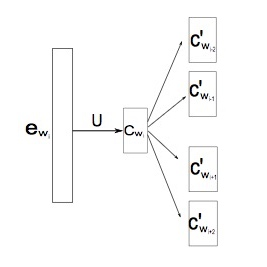
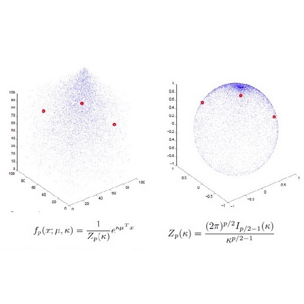

Publication
Recognize Foreign Low-FrequencyWords with Similar Pairs
Low-frequency words place a major challenge for automatic speech recognition (ASR). The probabilities of these words, which are often important name entities, are generally underestimated by the language model (LM) due to their limited occurrences in the training data. Recently, we proposed a wordpair approach to deal with the problem, which borrows information of frequent words to enhance the probabilities of lowfrequency words. This paper presents an extension to the wordpair method by involving multiple ‘predicting words’ to produce better estimation for low-frequency words. We also employ this approach to deal with out-of-language words in the task of multi-lingual speech recognition.
Xi Ma, Xiaoxi Wang, Dong Wang
Interspeech 2015
LOW-FREQUENCY WORD ENHANCEMENT WITH SIMILAR PAIRS IN SPEECH RECOGNITION
In practical automatic speech recognition (ASR) systems, it is difficult to recognize words that are with low-frequency in the language model (LM) training data. Ironically, these words tend to be highly important as they are often domainspecific name entities. In order to meet this challenge, we present a novel approach that enhances the weights of these words by borrowing information from some high-frequency words that are similar to the target words. Experimental results demonstrated that our method can significantly improve ASR performance on low-frequency words and does not impact performance on high-frequency words. Additionally, this method can be easily extended to deal with new words that are absent in the LM training data.
Xi Ma, Xiaoxi Wang, Dong Wang
ChinaSIP 2015
Document Classification Based on Word Vectors
This paper proposes a document classification approach based on word vectors. By learning context relationships, word vectors may represent fine-grained semantic elements. We assume that these low-level semantic implementation of words can be composed to represent high-level semantic concepts, and thus the semantic content of a document can be derived from those of the words it involves. Our experiments confirm that, even with the simplest pooling method, the document representation based on word vectors can deliver good performance on text classification tasks. When compared to the conventional LDA-based approach, the word vector approach is more stable, efficient and generalizable.
Rong Liu, Dong Wang, Chao Xing
Tsinghua Xuebao (in Chinese)
Stochastic Top-k ListNet
ListNet is a well-known listwise learning to rank model and has gained much attention in recent years. A particular problem of ListNet, however, is the high computation complexity in model training, mainly due to the large number of object permutations involved in computing the gradients. This paper proposes a stochastic ListNet approach which computes the gradient within a bounded permutation subset. It significantly reduces the computation complexity of model training and allows extension to Top-k models, which is impossible with the conventional implementation based on full-set permutations. Meanwhile, the new approach utilizes partial ranking information of human labels, which helps improve model quality. Our experiments demonstrated that the stochastic ListNet method indeed leads to better ranking performance and speeds up the model training remarkably.
Tianyi Luo, Dong Wang, Rong Liu, Yiqiao Pan
EMNLP 2015 long oral paper
点击查看全文
了解更多

Joint Semantic Relevance Learning with Text Data and Graph Knowledge
Inferring semantic relevance among enti- ties (e.g., entries of Wikipedia) is impor- tant and challenging. According to the in- formation resources, the inference can be categorized into learning with either raw text data, or labeled text data (e.g., wik- i page), or graph knowledge (e.g, Word- Net). Although graph knowledge tends to be more reliable, text data is much less costly and offers a better coverage. We show in this paper that different re- sources are complementary and can be combined to improve semantic learning. Particularly, we present a joint learning ap- proach that learns vectors of entities by leveraging resources of both text data and graph knowledge. The experiments con- ducted on the semantic relatedness task show that text-based learning works well on general domain tasks, however for tasks in specific domains, joint learning that in- volves both text data and graph knowledge offers significant improvement.
Dongxu Zhang, Dong Wang, Rong Liu
ACL 2015, Workshop CVSC
点击查看全文
了解更多

Normalized Word Embedding and Orthogonal Transform for Bilingual Word Translation
Word embedding has been found to be highly powerful to translate words from one language to another by a simple linear transform. However, we found some inconsistence among the objective functions of the embedding and the transform learning, as well as the distance measurement. This paper proposes a solution which normalizes the word vectors on a hypersphere and constrains the linear transform as an orthogonal transform. The experimental results confirmed that the proposed solution can offer better performance on a word similarity task and an English-toSpanish word translation task
Chao Xing, Dong Wang, Chao Liu, Yiye Lin,
NAACL 2015
点击查看全文
了解更多

Document Classification with Distributions of Word Vectors
The word-to-vector (W2V) technique represents words as low-dimensional continuous vectors in such a way that semantic related words are close to each other. This produces a semantic space where a word or a word collection (e.g., a document) can be well represented, and thus lends itself to a multitude of applications including document classification. Our previous study demonstrated that representations derived from word vectors are highly promising in document classification and can deliver better performance than the conventional LDA model. This paper extends the previous research and proposes to model distributions of word vectors in documents or document classes. This extends the naive approach to deriving document representations by average pooling and explores the possibility of modeling documents in the semantic space. Experiments on the sohu text database confirmed that the new approach may produce better performance on document classification.
Chao Xing, Dong Wang, Xuwei Zhang, Chao Liu
APSIPA 2014
点击查看全文
了解更多

Document Classification with Spherical Word Vectors
Recent research shows that low-dimensional continuous representations of words (word vectors) can be successfully employed to classify documents, and document vectors derived from semantic clustering work better than those derived from simple average pooling. On the other hand, our recent study demonstrated that embedding words on a hypersphere offers better performance on tasks including semantic relatedness and bilingual translation when compared to the original approach that embeds words in an unconstrained plane space. In this paper, spherical word vectors are applied to the document classification task. The experiments show that spherical word vectors can deliver good performance when combined with semantic clustering based on vMF distributions
Yiqiao Pan, Chao Xing, Dong Wang
APSIPA 2015